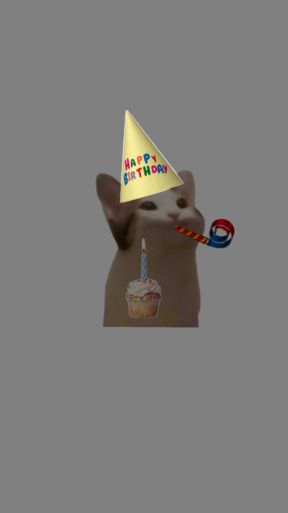
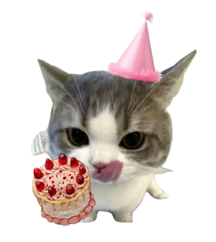

I hope your day is soft, funny, and a little chaotic (like you).
and I wish you to achieve all your dreams, because you are truly a wonderful person.
I hope there are never any bugs in your code
I hope you still laugh the way you did during Alias…
and stay patient even when someone drops dolma on you again.
I hope your new country treats you kindly.
I wish that one day you will understand that taking bus number 25 and getting off at Baghramyan to get to the 7th Masiv from the monument was not pointless.
I hope your friend who is studying on EPH gets that 19.5 on all of his armenian language tests
And I hope you don’t lose the silly, kind, honest and patient version of you I got to see.